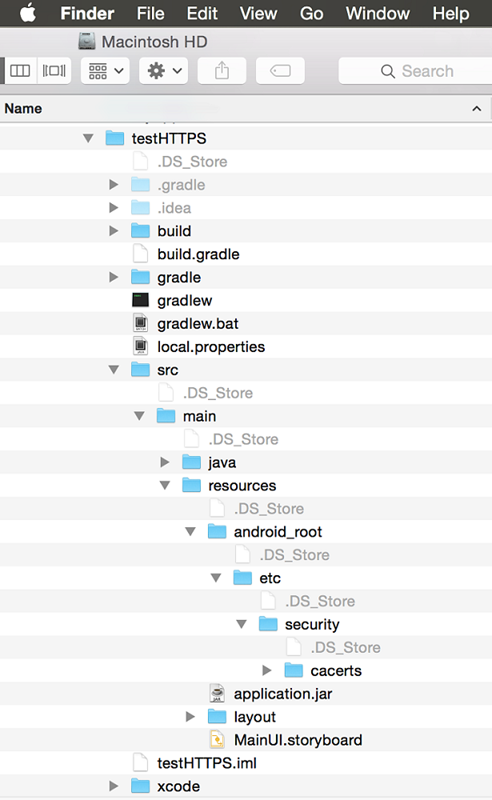
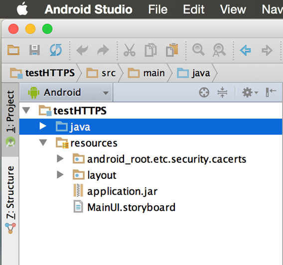
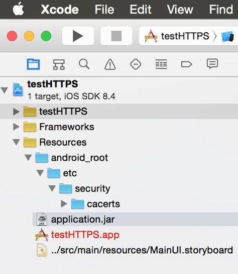

Enabling HTTPS with Intel’s Multi-OS Engine¶
This page describes configuration steps needed to enable https access using Intel’s Multi-OS Engine Technical Preview software on an Apple macOS development system. It also provides information about the relevant RssReader Samples.
The standard java.net.URL class provides HTTPS functionality. Use these instructions on your macOS development system to set up security providers and CA certificates (cacerts).
Set up Security Providers¶
Change the current directory to the resources directory of your Multi-OS Engine module.
cd your-path/resources
Create a ./java/security directory.
mkdir –p ./java/security
Download and copy the security.properties file from the Android* code repository to the directory you just created.
cd –p ./java/security
curl –o ./security.tar.gz “https://android.googlesource.com/platform/libcore/+archive/master/luni/src/main/java/java/security.tar.gz”
tar --extract --file=./security.tar.gz ./security.properties
rm ./security.tar.gz
cd ../../
Zip the ./java directory to an application.jar file.
zip –r application.jar ./java
Finally, remove the ./java directory.
rm –R ./java
Set up CA Certificates¶
Change the current directory to the resources directory of your Multi-OS Engine module.
cd your-path/resources
Create the ./android_root/etc/security/cacerts directory.
mkdir –p ./ android_root/etc/security/cacerts
Download and copy the cacerts directory from the Android code repository to the directory you just created.
cd ./android_root/etc/security/cacerts
curl –o ./cacerts.tar.gz “https://android.googlesource.com/platform/libcore/+archive/android-5.1.1_r37/luni/src/main/files.tar.gz”
tar --extract --file=./cacerts.tar.gz
rm ./cacerts.tar.gz
cd ../../../../
In the macOS Finder* tool, the directory structure of your Multi-OS Engine module should look like this
In the Android Studio* IDE, the directory structure of your Multi-OS Engine module should look like this
The structure of your Apple Xcode* project should look like this
Now you should be able to use HTTPS in your project through the java.net.URL class.
Samples¶
Starting with Multi-OS Engine build 307, you can find the RssReader sample that shows how to use HTTP and HTTPS in the samples directory, which you will find within the Multi-OS Engine installation directory:
On an macOS system, it is usually located at: /Applications/Intel/multi_os_engine/samples.
On a Microsoft Windows system, it is usually located at: C:Intelmulti_os_engine_<build_number>samples